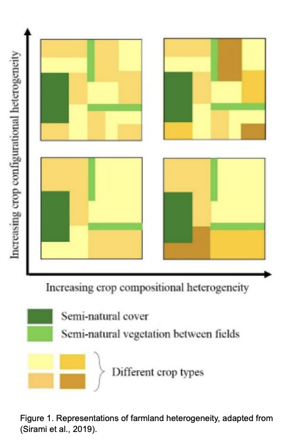

Projects
IMPORTANT: Here I will update studies that I may carry out during my PhD at ASE-NTU
17 | 09 | 2020 Last compiled: 2020-11-02
Socio-Economic Factors Affecting Crop Heterogeneity
Crop heterogeneity may be particularly important in situations where patches of semi-natural/natural vegetation are too small to support viable population sizes of species. They are also a component of the agricultural landscape that can be shaped by policy, and it has been argued that cropping systems may be beneficial to local economics, as well as the environment. Hence, increasing crop heterogeneity could be a way in which to both positively affect crop production (and farmers’ livelihoods) and biodiversity conservation. However, for farmers to be able to adapt their farmlands for biodiversity-friendly farming, they will need to have the confidence that such approaches are also economically efficient.
As farmers’ interest and attitudes significantly influence the decision-making process on what to plant and how to manage both crops and non-crop areas, integrating socio-economic factors is essential to develop sound management options, as well as to understand agroecosystems itself. This project is designed to incorporate the major socio-economic factors that influence heterogeneous agroecosystems, which is rarely done in agricultural studies.
Aim: The main aim of this project is the synthesis of knowledge and the application of scientific findings for future management. Outcomes from the analysis will advance scientific understanding of agroecosystems and help construct more effective policies that ensure sustainable agricultural landscapes that work for both biodiversity and people.
Project 1 (the main idea): Farmland heterogeneity to reduce the agricultural risks
Highlights
The effect of crop heterogeneity (i.e. crop compositional and configurational heterogeneity) on production (yield and price), pest activities, and agrochemical usage will be tested.
Crop heterogeneity effects on farmers’ profit margin will be tested.
Crop heterogeneity effects on contract farming will be tested.
Description
Crop heterogeneity can be seen as having two key components: (i) crop compositional heterogeneity (the number and evenness of crop types) and (ii) crop configurational heterogeneity (spatial arrangement of crop fields, Fahrig et al., 2011).
Heterogeneity of farmlands that the farmer produces may be an effective way to help farmers deal with several types of agricultural risks such as price and yield risk (see Bowman and Zilberman, 2013). Different biological and geophysical factors can cause yield risks; e.g. water availability (floods or droughts), soil fertility and pest or weed infestations. On the other hand, price risk is the risk whereby the price received for their production will be higher or lower than average in a given year.
I aim to study crops with varied degrees of risk featured in a heterogenous farmland and obtain data on price and yield risk by market and social surveys. Subsequently, the optimal portfolio of crop types to co-exist can be found by taking into account the means and variances of market prices (for price risk) of each crop type and/or climate and crop identity (for yield risk) data. If the risks (yield or price) for two crops are poorly correlated, then I propose farmers can grow those crop types together.

Questions
Can farmland heterogeneity be adapted to reduce the agricultural risk?
Can less frequent crops, such as vegetables, reduce the agricultural risks when used in conjunction with monoculture crops?
Hypotheses
Inclusion of low-risk crop types might ensure famers’ livelihoods by providing stable yield.
Understanding the importance of spatial co-existence between different types of farmlands, which will advance the knowledge of crop identity, might boost the farmers income as opposed to if crop types are chosen randomly.
Experimental Design
All the data will be collected through questioner surveys.
Study sites
I will survey smallholder dominated heterogeneous farmlands in Sri Lanka as the study cases. Sri Lanka is a tropical island with 46 agro-ecological regions across three different climatic zones (i.e. 15 wet, 11 dry and 20 intermediate) (SLBCHM 2020), and belongs to the Western Ghats and Sri Lanka biodiversity hotspot (Myers et al., 2000). Double rice cultivation is consistent throughout the island as the major staple crop (AESD-DCS 2019). Consequently, it has been noted that fertilizer (especially nitrogen application) and pesticide use, is much higher and thus, agriculture intensification is an important environmental issue in Sri Lanka.
Variables
Farmer-based surveys
Crop and non-crop area at each farmland, including a crop list
Yield from each crop type
Price for Agrochemicals (herbicides, insecticide) and fertilizer¬––this is a proxy for pest attack
Yield and profit loss due to floods or droughts
Terms of contract farming and profit loss
Market-based surveys
Price variability thought the year
Profit from each crop (the margin of buying and selling)
Profit of contract farming
Data Analysis
I will adopt state-of-the-art modeling methods such as Bayesian hierarchical models and Bayesian networks, as well as machine learning algorithms and frequentist statistical models (LMM, GLMM, GLS, GAM). However, the final decision will depend on the data I will be received through the questioner surveys. Simulated data and R-cords for each analysis can be found below.
References
AESD-DCS (Agriculture and Environment Statistics Division of the Department of Census and Statistics), 2019. Paddy statistics, Sri Lanka [WWW Document]. URL http://www.statistics.gov.lk/agriculture/Paddy Statistics/PaddyStats.htm
Bowman, M.S., Zilberman, D., 2013. Economic factors affecting diversified farming systems. Ecol. Soc. 18, 33. https://doi.org/10.5751/ES-05574-180133
Fahrig, L., Baudry, J., Brotons, L., Burel, F.G., Crist, T.O., Fuller, R.J., Sirami, C., Siriwardena, G.M., Martin, J.-L., 2011. Functional landscape heterogeneity and animal biodiversity in agricultural landscapes. Ecol. Lett. 14, 101–112. https://doi.org/10.1111/j.1461-0248.2010.01559.x
Myers, N., Mittermeier, R.A., Mittermeier, C.G., da Fonseca, G.A.B., Kent, J., 2000. Biodiversity hotspots for conservation priorities. Nature 403, 853–858. https://doi.org/doi:10.1038/35002501
Sirami, C., Gross, N., Baillod, A.B., Bertrand, C., Carrié, R., Hass, A., Henckel, L., Miguet, P., Vuillot, C., Alignier, A., Girard, J., Batáry, P., Clough, Y., Violle, C., Giralt, D., Bota, G., Badenhausser, I., Lefebvre, G., Gauffre, B., Vialatte, A., Calatayud, F., Gil-Tena, A., Tischendorf, L., Mitchell, S., Lindsay, K., Georges, R., Hilaire, S., Recasens, J., Solé-Senan, X.O., Robleño, I., Bosch, J., Barrientos, J.A., Ricarte, A., Marcos-Garcia, M.Á., Miñano, J., Mathevet, R., Gibon, A., Baudry, J., Balent, G., Poulin, B., Burel, F., Tscharntke, T., Bretagnolle, V., Siriwardena, G., Ouin, A., Brotons, L., Martin, J.-L., Fahrig, L., 2019. Increasing crop heterogeneity enhances multitrophic diversity across agricultural regions. Proc. Natl. Acad. Sci. 116, 16442–16447. https://doi.org/10.1073/pnas.1906419116
SLBCHM (Sri Lanka Biodiversity Clearing House Mechanism), 2020. No Title [WWW Document]. Agro Ecol. Reg. URL http://lk.chm-cbd.net/?page_id=176
02 | 10 | 2020 Last compiled: 2020-11-02
Alternative Project (Chapter 1B): Contrasting functional structure of dung beetle assemblages associated to different land-use types
Aim 1. Studying underlying assembly mechanisms of dung beetle communities across different land-use types (i.e. logged forests, oil palm plantations and riparian areas) using both taxonomical (i.e. species richness and diversity) and functional diversity metrics (functional richness, evenness, divergence, redundancy) in multiple year sampling. Functional diversity metrics and their deviation from the predicted values will be measured by a null model approach.
Aim 2. Studying of functional beta-diversity: test functional homogenization among the communities as a result of different land-use types across multiple sampling years.
Aim 3. Studying dung removal and associated functional traits across land-use types.
Description

Questions
Hypotheses
Experimental Design
Study sites
Variables
Data Analysis
References
Alternative Project (Chapter 1A): Contrasting functional structure of dung beetle assemblages associated to different land-use types
Chapter 1A: Effects of animals on biomass removal
Q. Does animal removal or animal diversity affect ecosystem functioning?
Description